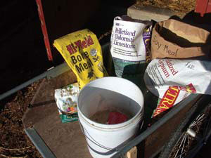

CHERYL LONG
Organic fertilizer ingredients are less expensive when bought in bulk. The basic organic fertilizer ingredients are seed meal, agricultural lime, gypsum, dolomitic lime (or dolomite), kelp meal and bone meal, rock phosphate or high-phosphate guano.